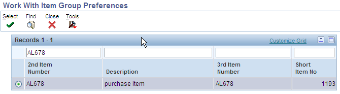
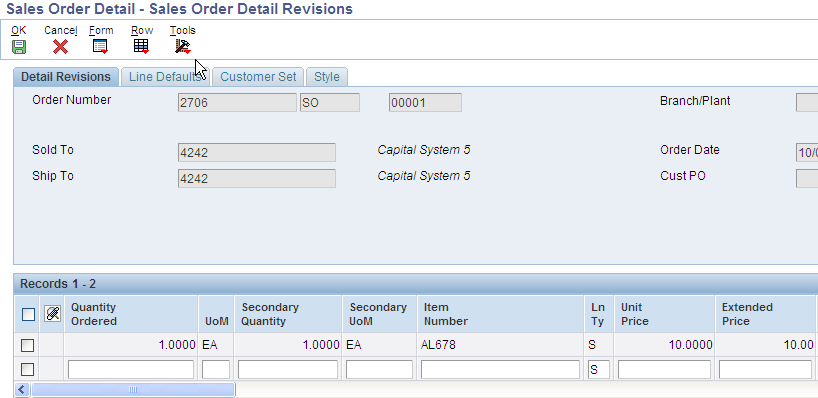

Basic Preference Type 10 - Line of Business (P40310-F40310)
Purpose
Basic Preference 10 (Line of Business) directs the system to populate the Line of Business field (alias LOB) into the Sales Order Detail table (F4211), based on the preference hierarchy. This paper shows the setup and processes required to implement this preference. The preference is available in releases XE and above.
The Line of Business basic preference is used to default the Line of Business field into the Sales Order Detail (F4211) file, based on the preference hierarchy.
The system searches the preference hierarchy until it finds a match. The LOB field is generally used for reporting purposes; price adjustments can also be based on this field.
Access the Preference Master (P40070) on menu G4231. Locate Pref Type 10 and take the Form Exit to Item Groups:
This takes the user to the P40072 program, Item group preference revision. Locate an item, then hit Select:

Add the desired Line of Business value in the appropriate field.
Return to the Preference Master and click on Select, this will take the user to the P40310 program. Click Add, and the details of the preference can be entered.
Set item group DIST with Line of Business "SW" :
Activating Preference processing
Processing options must be set in two places to enable the preference functionality:
First, program R40400 (Preference Processing Options), tab Process Ctl2 (#2, Line of Business) :
Second, processing options of P4210 , Preference tab (#1, Preference Profile Processing ) and Versions tab (#6, Preference Profile (R40400)):
Sales Order Entry (P4210)
Enter a sales order (P4210):

Notice that the Line of business field defaults to the value of ‘SW’ defined in the preference:
Using Line of Business Preference with Advanced Pricing
Advanced Pricing Setup
On menu G42311, access the P4092 program, Order Detail Groups. Enter an Order Detail Group for Line of Business:
Add a price adjustment definition (P4071) using this Order Detail Group:
Set the the details of the adjustment to give a 10% discount (P4072):
This adjustment is added to a schedule and the schedule is linked to customer 4242 in the Customer Billing Instructions (not shown).
Sales Order Entry (P4210) Example with Advanced Pricing
Enter an order using a version of P4210 where the preference processing is activated. Line of business "SW" defaults to the LOB field (F4211 table) matching the adjustment detail, activating the discount of 10% :
The Price history screen shows the adjustment was applied: